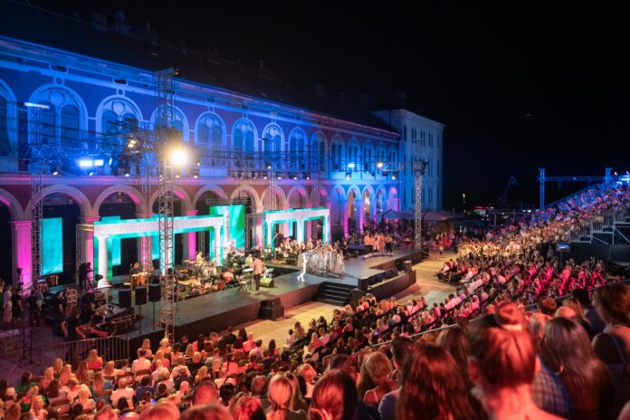

Festival zabavne glazbe Split ili Splitski festival jedan je od najpopularnijih festivala zabavne muzike u Hrvatskoj, koji se već preko 50 godina održava svakog ljeta u Splitu. Splitske Prokurative, na kojima se festival održava od kasnih 1960ih, znaju zablistati početkom jula i postati centar muzičkog svijeta zemlje za narednih par festivalskih dana. Prvi Splitski festival održan je 1960. godine, kao muzičko-modna revija "More-Revija-Split", a od tada je pa do danas na njemu izvedeno preko 800 kompozicija najznačajnijih domaćih autora (Zdenko Runjić, Arsen Dedić, Đelo Jusić, Nikica Kalogjera, Rajko Dujmić, Zrinko Tutić, Đorđe Novković) u interpretaciji najjačih imena domaće zabavne muzike (Mišo Kovač, Tereza Kesovija, Oliver Dragojević, Kemal Monteno, Radojka Šverko, Ibrica Jusić, Miki Jevremović, Meri Cetinić, Tedi Spalato, Zorica Kondža, Đorđi Peruzović) i najboljih domaćih vokalno-instrumentalnih sastava ("Dubrovački trubaduri", "Pro arte", "Indexi", "Teška industrija", "Novi fosili", "Magazin", "grupa 777").
Split grad pobjednika, posebna sportska priča u svijetu. Za Split se kaže da je najsportskiji grad u svijetu jer nijedan grad u svijetu sa tolikim brojem stanovnika (180000) nema toliko broj svjetskih i evropskih prvaka i olimpijskih pobjednika, u kolektivnim i pojedinačnim sportovima. Posebna priča je i ljubav stanovnika Splita i Dalmacije prema sportu. Djeci je od malih nogu usađena ljubav prema sportu i većina djece se od malih nogu počinje baviti sportom. Veliki je talent prisutan u ovom podneblju, pa nije ni čudno šta grad Split ima toliko šampiona. Nogomet, košarka, vaterpolo, rukomet, odbojka, ragbi, tenis, plivanje, veslanje i borilačke vještine su sportovi koji dominiraju ali ipak najveća ljubav je nogometni klub Hajduk i takve ljubavi prema nekome klubu može se vidjeti i osjetiti u malo gradova u svijetu. Ta ljubav graniči sa ludilom i šta je klub lošiji više ga se voli. Ipak u povijesti Splitskog sporta najveće uspjehe postigao je košarkaški klub Jugoplastika i u periodu 1989-1991 3 puta je bio prvak Evrope i proglašena najboljom momčadi Evrope 20tog stoljeća. Nevjerojatno mlada momčad predvođena Tonijem Kukočem i Dinom Rađom igrala je košarku kakva se ni danas ne igra nakon 20 godina. Goran Ivanišević, pobjednik Wimbledona 2001 godine je ostavio trag u svjetskom tenisu i doživio da ga na rivi dočeka 50000 ljudi da bi ga pozdravili. Vaterpolo je isto zanimljiva priča jer u Splitu su 3 kluba koji su kroz svoju povijest osvajala najveće uspjehe. VK Jadran 2 puta prvak Evrope (1991 i 1992.god) i VK Pošk-Slobodna Dalmacija prvak Evrope 2000 godine i VK Mornar pobjednik Kupa Kupova 1987 godine. Veliki broj vaterpolista su osvajači olimpijskih medalja i svjetski i evropski prvaci a od te skupine vrhunskih igrača, Milivoj Bebić je 3 puta proglašen za najboljeg igrača na svijetu 1982, 1983 i 1985 godine. Rukometni umjetnik Ivano Balić, proglašen najboljim igračem na svijetu 2003 i 2006 godine. Svi klubovi iz svih nabrojenih sportova su dali gradu Splitu prvake kroz povijest i po nekoliko puta i jedina neostvarena želja stanovnika Splita je da nogometni klub Hajduk bude prvak Europe.